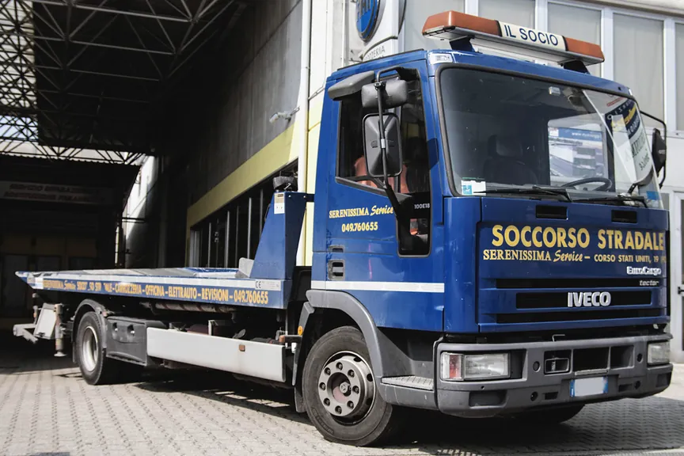
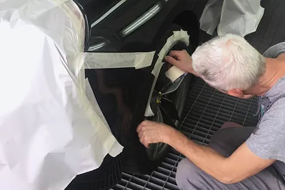
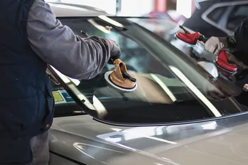
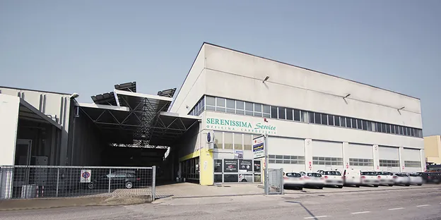

Botta? Risposta!
Carrozzeria, officina e soccorso stradale, Padova
Una nostra cabina / Corso Stati Uniti 19, Padova
Hai avuto un incidente? Pensiamo a tutto noi
Il cliente non dovrà anticipare nulla: con il sinistro l'indennizzo va direttamente alla carrozzeria.
-

Il carro attrezzi
A disposizione, con il nostro carro: l'auto arriva direttamente in carrozzeria.
-
Intanto hai l'auto sostitutiva gratuita, con la Kasko e senza limiti di chilometri.
-
La pratica
Ti aiutiamo a compilare il modulo CAI / CID, teniamo noi i rapporti con l'assicurazione e incontriamo il perito.
Scarica il modulo CID (PDF). Al telefono scegli l'interno Carrozzeria.
-

La riparazione
L'incidente non è solo carrozzeria: officina, elettrauto e cristalli sono nella stessa sede.
-

La verniciatura
Verniciature all'acqua, con l'intero processo di essicazione in cabina.
La tua compagnia, il tuo noleggio
L'indennizzo diretto alla carrozzeria vale con tutte le compagnie. Con queste siamo carrozzeria fiduciaria:
- Allianz
- Amissima (ex Carige)
- Assimoco
- Cariparma Crédit Agricole
- Cattolica Assicurazioni
- Crédit Agricole
- Credit Ras Assicurazioni
- Direct Line
- Europ Assistance
- Fata Assicurazioni
- FCA Bank
- Generali
- Genertel
- Genialloyd
- Global Assistance
- Groupama
- HDI
- Helvetia
- Intesa Sanpaolo
- MSA Multiserass
- Prima.it
- TUA Assicurazioni
- UnipolSai
- Verti
- Vittoria Assicurazioni
- Zurich
- Zurich Connect
Ayvens
ALD Automotive e LeasePlan: denuncia online, con o senza controparte.
Alphabet
Entro 3 giorniSenza controparte: il modulo va a sinistri@alphabet.com entro 3 giorni dall'evento.
Athlon
Area driver: danni, sinistro e furto online.
Sifà
Subito, 8-19Segnala subito il sinistro dall'app o al Servizio clienti, 800 037631.
Leasys
Entro 3 giorniModulo DEN001 online, entro 3 giorni dall'evento.
Volkswagen Lease
Carrozzeria, cristalli, gomme. Poi conferma il link che ti arriva per email.
Poi pensiamo noi a fare le foto dei danni, chiedere l'autorizzazione al noleggio, prenotarti l'auto sostitutiva, se prevista, e fare la riparazione.
Tutto nella stessa sede
Ci prendiamo cura di tutto ciò che la tua auto richiede.
Siamo nati da un ramo di una storica carrozzeria di Padova degli anni Sessanta: dal 1993 siamo Serenissima Service, dal 2001 su 3000 mq in zona industriale.



- 01
Officina e meccatronica
Tutte le marche, auto e furgoni fino a 35 quintali.
Vai alla pagina - 02
Centro cristalli
Non tutte le scheggiature richiedono la sostituzione del vetro.
Vai alla pagina - 03
Grandine e levabolli
Spesso la riparazione avviene anche in giornata.
Vai alla pagina - 04
Carrozzeria e verniciatura
Smart repair da 1 a 4 ore, verniciature opache, cerchi in lega.
Vai alla pagina - 05
Elettrauto e aria condizionata
Diagnosi per qualsiasi casa, antifurto anche satellitare.
Vai alla pagina
Prenota il tagliando
Tagliandi completi su qualsiasi chilometraggio, per tutte le marche. Ti confermiamo la data via email o telefono.
| Lunedì-venerdì | 8-12 e 14-18 |
|---|---|
| Sabato | 8-12 |
| Domenica | chiuso |
Pensiamo a tutto noi: chiamaci o passa in sede
Corso Stati Uniti 19/19-A
zona industriale, 35127 Padova
Lunedì-venerdì 8-12 e 14-18, sabato 8-12
IndicazioniIncidente e carrozzeria
049 760655Scegli l'interno Carrozzeria. Lunedì-venerdì 8-12 e 14-18, sabato 8-12.
Soccorso stradale
335 5639355Con il nostro carro attrezzi.
Officina e tagliando
info@serenissimaservice.itOppure 049 760655. Lunedì-venerdì 8-12 e 14-18, sabato 8-12.
